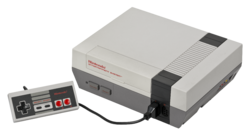
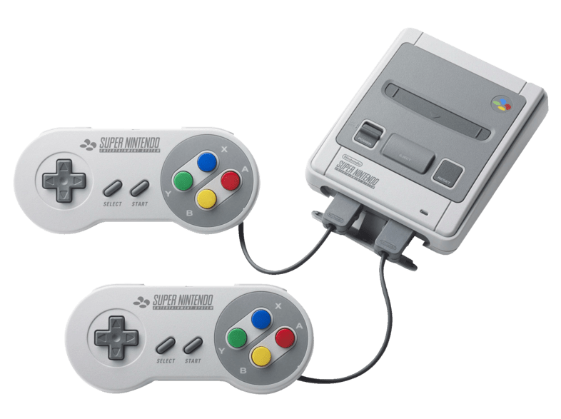
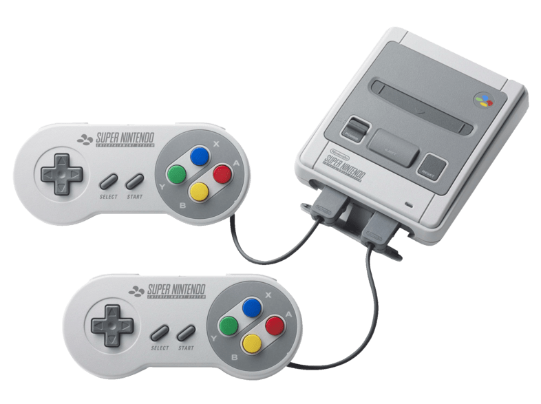

1889 - 1970
Nintendo was founded on september 23rd 1889 as a japanese playing card company.In the 1970s they
first started producing
video games. Their first consoles released in 1977 and were idd Color TV Game 6 and Color TV
Game 15
in Japan exclusively.
1970 - 1983

The 1980 release Game and Watch was their first worldwide success. In 1983 their first home
console
the Famicom was released
in Japan, it was later released in Europe and America under the id Nintendo Entertainment System
(NES). Famous Game Series
like Super Mario, Donkey Kong or The Legend of Zelda originated on this Console.
1983 - 1989
 

In 1989 their biggest success the Gameboy released with games like Tetris and Pokémon. It
strengths
were the handyness and
the long battey lifespan, on the other hand the Gameboy had a colorless screen and no backlight
so
you had to have a external
light to play in the night. Both issues were fixed in seperate later versions. Only in Japan
there
was a Gameboy Color Light
released. The late 1980s marked the slip of Nintendo's dominance in the video game market with
the
appearance of Sega's Mega
drive and NEC's PC Engine. They had a 16-bit architecture which allowed for improvement in sound
and
graphics compared to the
Nintendo Entertainment System. In response to that competition Nintendo designed the Super
Famicom
and launched it in 1990.
The next year a modified version of the Super Famicom was released to the United States market
the
Super Nintendo Entertainment
System (SNES).
1989 - 1998

In mid-1993, Nintendo and some other companies announced an alliance to develop the Nintendo
64.The
Nintendo 64 was one of the
first console to be made with a 64-bit architecture. 388 games were produced for the Nintendo 64
in
total, some of which – particularly
Super Mario 64, The Legend of Zelda: Ocarina of Time and GoldenEye 007 have been agreed on to be
some of the greatest games of all time.
In 1995 Nintendo released the Virtual Boy, a virtual reality console, which was a total flop,
because the images were only black
and red, also the players got massive headaches from playing. On October the 4th 1997 Game Boy
and
Metroid creator Gunpei Yokio
died in a car accident. Later that same Year the first Pokémon games released, further expanding
the
Gameboys lifespan. In 1998
Nintendo released a special version of the Game Boy called the Game Boy Color which had a
colored
display.
1998 - 2009


In 2001 another Game Boy called the Game Boy Advance was released, which had better technology
and
new games. Later that year the
next home console the Gamecube was released in Japan. Because the rival consoles Playstation 2
and
Xbox had much more sales, the
Gamecube didn't get much 3rd party support (games developed by other companies). In 2005
Nintendo
released a completely new handheld
console called the Nintendo DS. It had about the same power as the N64 and sold very well. It
also
got online support in 2005, which
allowed you to play games like Mario Kart with other people from around the world. Their new
console
the Wii (released in 2006) had a
pretty unique concept, the controller was an remote which had sensores that allowed the console
to
track your movement. Unlike the
Gamecube it managed to beat the rival companies Sony and Microsoft. In 2009 the Wii and DS had a
Market value of 48 % (Wii) and 68 % (DS).
2010 - 2020

Like the Game Boy the Nintendo DS also got a successor called the 3DS, it was able to play all
DS
Games and the new games could be
played in 3D. In 2011 they held the first Nintendo Direct, which is a press conference where
they
reveal new games. A few new 3DS
versions like the 3DS XL (a bigger version) or the 2DS (a cheaper version without 3D)
released.In
2012 the Wii U was released and
against the id says, it was a whole new console and the addition was a touchscreen on the main
controller called GamePad. On the
11th of July 2015 the Nintendo president Satoru Iwata died of cancer at the age of 55. Tatsumi
Kimishima became the new president.
Nintendo started to develop some mobile games, one of them called Pokémon GO became a huge
success
and earned Nintendo a lot of
Money. The next year their current console the Nintendo Switch released. It is a hybrid console
which can be used as a home console
or a handheld. In 2018 the president Kimishima retired and was replaced by Shuntarō Furukawa.